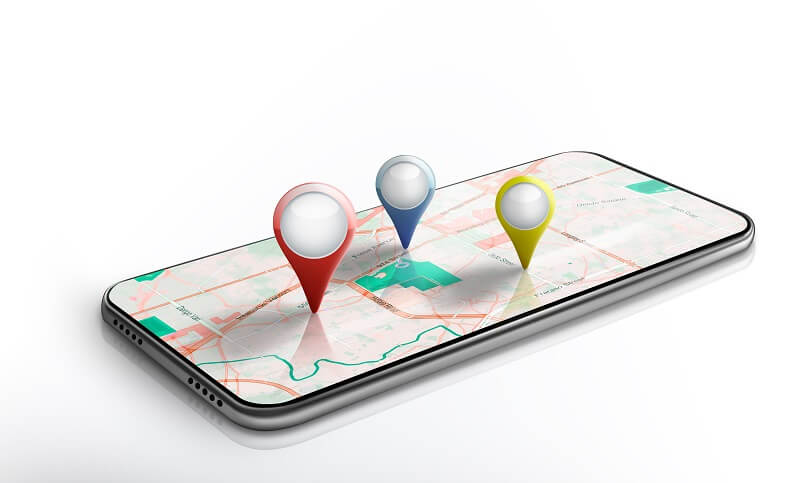
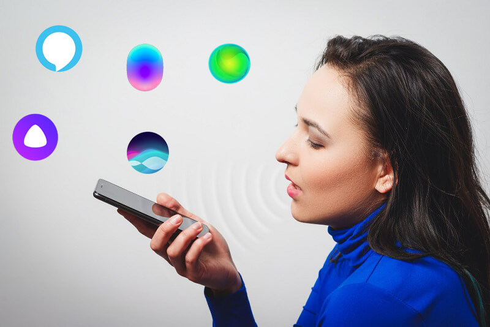

Digital-маркетинг - это направление, в котором за трендами невозможно угнаться, особенно в последние два года. Технологии развиваются настолько стремительно, что главным качеством хорошего маркетолога становится умение импровизировать и генерировать новые идеи на ходу. Предлагаем вам обзор 12 наиболее перспективных направлений, на которые следует обратить внимание, т.к. велика вероятность, что основные сенсации года будут связаны именно с ними.
№1 Короткие видео
Видеоконтент стремительно захватывает соцсети: уже сейчас он занимает большую часть трафика в интернете, а в 2022 году по некоторым прогнозам его объем составит до 82% трафика. Не последнюю роль в популяризации видеоконтента сыграл TikTok с его форматом коротких видео. Аналогичные платформы появились во всех крупных соцсетях: Reels (Instagram), YouTube Shorts, Клипы (ВКонтакте). Формат коротких видео не потеряет популярность в ближайшие годы, потому что:
- Это экономит время. Согласно исследованиям Elite Content Market 66% пользователей интернета смотрят короткие ролики, когда хотят оценить продукт, а статьи с иллюстрациями предпочитают лишь 18%. По другим данным 68% пользователей точно досмотрят ролик до конца, если его длительность не превышает 60 секунд.
- Это популярно. Число пользователей TikTok в 2021 году перевалило за отметку 1 млрд. Это значит, что реклама в формате короткого видео уже стала маркетинговым стандартом.
- Это модно. Короткие видео становятся вирусными быстрее, чем другие материалы.
- Аудитория коротких роликов взрослеет. В первые годы активными пользователями ТикТока были в основном молодые люди – школьники и студенты. Сегодня платформу осваивают блогеры среднего возраста (старше 25 лет), при этом интерес молодежи к формату только увеличивается.
№2 Омниканальный маркетинг
Омниканальность в маркетинге приходит на смену устаревающей мультиканальности. Мультиканальный маркетинг предполагает взаимодействие с клиентом через разные каналы, не связанные между собой, каждый из которых имеет свою стратегию и особенности. Такой подход устраивал клиента еще совсем недавно, но с развитием информационных технологий, с повышением доступности разных типов устройств мультиканальность постепенно становится неудобной. Фокус важности смещается с самого канала при мультиканальности на пользователя при омниканальности.
Смысл омниканального маркетинга в том, что сколькими бы каналами ни пользовался клиент, он остается тем же самым клиентом, а значит, на разных каналах сервисы должны узнавать его и работать с ним в одном ключе. Допустим, на фейсбуке покупатель, подписанный на email-рассылку, просматривал определенную категорию товаров. Это значит, что в ближайшей рассылке ему придут рекомендации с учетом его действий на фейсбуке. Например, уведомление о скидках на товары из целевой категории.
Важно, чтобы сервисы идентифицировали все устройства пользователя, как того же самого пользователя, позволяя ему пройти по воронке продаж от рекламы до покупки, меняя устройства сколько угодно раз.
№3 Геофенсинг

Это технология взаимодействия с владельцем гаджета при его перемещении из одной географической зоны в другую. Отслеживание перемещений с помощью GPS дает бизнесу много организационных возможностей, на наибольшую ценность представляют маркетинговые. С помощью геофенсинга можно:
- Раскручивать новые точки. Например, зная географию перемещений 1000 человек, можно отсортировать 200 из них, как постоянно посещающих километровую зону вокруг нового магазина. Таким людям можно выслать персональное приглашение на электронную почту с промокодом. Узнав, что недалеко от него открылся новый супермаркет и ему дарят скидку, он наверняка захочет туда сходить.
- Привлекать клиентов в существующие точки. Например, при пересечении целевой зоны человек получает пуш-уведомление с приглашением выпить чашечку кофе по персональной скидке в заведении, которое как раз неподалеку. Это работает в 53% случаев по актуальной статистике и это направление будет развиваться с каждым годом.
- Изучать поведение. Имея данные о передвижениях человека за существенный период времени, можно хорошо понять его нужды и показывать ему идеальную таргетированную рекламу.
№4 Голосовые помощники

Цифровые помощники на заре их появления использовались преимущественно в развлекательных целях или для управления базовыми функциями гаджетов. Сегодня с их помощью совершаются покупки. В 2022 году прогнозируется рост стоимости голосовых покупок до 40 млрд. долларов. Самыми популярными голосовыми помощниками остаются Google Assistant, Siri и Alexa. В России популярна Яндекс.Алиса, которая также умеет принимать платежи. По статистике Google 52% пользователей умных колонок используют их для получения коммерческой информации, поэтому компании уже могут рассматривать их в качестве канала взаимодействия с клиентами.
По мере совершенствования технологий голосового взаимодействия с пользователем, коммерческое направление будет одним из самых разрабатываемых. В 2022 году ожидается рост количества голосовых покупок, расширение функциональности персональных помощников. Кроме того, ожидается, что таргетинг также будет улучшаться благодаря умным девайсам, которые слышат и видят пользователя 24 часа в сутки.
№5 Привлечение некоммерческих организаций
В мире наблюдается тренд на поддержку бизнеса, приносящего пользу обществу. По статистике Ernst and Young, до 70% потребителей вменяют это в обязанность брендам. Миллениалы, согласно той же статистике, показывают высокую склонность к ценностно-ориентированному выбору бренда. 83% отдают предпочтение компании, ценности которой совпадают с их собственными. 81% заявляют о готовности оказывать поддержку такому бизнесу.
Сотрудничество с НКО – один из актуальных способов привлечь новую аудиторию в 2022 году. Озабоченность социальными проблемами в развитых странах остается на высоком уровне последние 10 лет, особенно молодые люди демонстрируют неравнодушие и призывают влиятельных лидеров становиться ответственнее. Среди трендов по-прежнему значатся:
- этичная пища и проблема жестокого обращения с животными;
- проблемы изменения климата, загрязнение окружающей среды;
- борьба с расовой дискриминацией;
- забота о детях;
- рабство и торговля людьми.
Многие крупные бренды осознают необходимость сотрудничества с НКО, делают ежемесячные или ежегодные пожертвования в виде % от прибыли, вносят изменения в производственный процесс, например, сокращают количество пластика, вредных выбросов в атмосферу и т.д.
№6 Отказ от сторонних файлов cookie
Тренд на отказ от сторонних файлов cookie продиктован протестом пользователей против отслеживания их действий в интернете. Гугл заявил о планах полностью отключить сторонние cookie в браузере в 2023 году, а в 2022 году будет проводиться масштабное тестирование. Яндекс пока лишь ограничивает передачу cookie другим сервисам, а Firefox и Safari полностью от них отказались. Развитие тренда будет обусловлено конкуренцией и растущим спросом на безопасные инструменты интернет-серфинга. Для маркетологов это проблема №1, потому что таргетирование рекламы придется строить на новых принципах. От самой таргетированной рекламы отказываться никто не собирается, но ценность пользовательских данных с отказом от сторонних cookie существенно возрастет.
По некоторым прогнозам ожидается рост спроса на инструменты сквозной аналитики, продиктованный также популяризацией омниканального маркетинга. Сквозная аналитика позволяет таргетировать рекламу, опираясь на информацию о действиях клиента, полученную из разных источников.
№7 Искусственный интеллект
Маркетинг – одно из перспективных направлений для внедрения ИИ в 2022 году. Уже сегодня можно перечислить по меньшей мере Х направлений его использования:
- Сегментирование ЦА и составление портрета клиента. ИИ не только анализирует, но и настраивает взаимодействие сервиса с клиентом на основе его предпочтений (например, управление push-уведомлениями).
- Сбор и анализ информации онлайн.
- Автоматизация маркетинга. Это направление разрабатывается с 2019 года, его цель – улучшить таргетирование с помощью технологий машинного обучения.
- Индивидуализация взаимодействия с клиентом. Например, почтовые рассылки могут составляться таким образом, что каждый клиент будет получать письма в наиболее удобное для него время взаимодействия. Такой уровень сервиса невозможно обеспечить человеческим трудом без космической стоимости.
- Разработка и управление контентом. Удивительно, но машины уже учатся писать статьи. В ближайшей перспективе машины будут упрощать разработку контент-стратегий с помощью анализа поведения потребителя.
Маркетолог будущего будет лишь корректировать работу машины и принимать ключевые решения – выбирать лучшее из предложенных вариантов.
№8 Метавселенные и виртуальная реальность
Пользователь неохотно предоставляет свои данные для коммерческих целей, что является главным препятствием на пути развития модели продаж direct-to-consumer. Но на смену реальной экономике приходит виртуальная на основе метавселенных, в которых пользователь выступает как аватар. Внутри метавселенной становится возможной модель продаж direct-to-avatar. Такие виртуальные вселенные, как Roblox и Fortnite, предоставляют для этого все необходимые инструменты. Виртуальный маркетинг в 2022 году будет развиваться ускоренными темпами, т.к. интерес к метавселенным со стороны пользователей интернета растет неуклонно.
Поведенческие особенности аватара – перспективное направление для изучения, т.к. они разительно отличаются от поведения реального человека. Продажи аватарам подчиняются собственным законам, разработкой которых еще долго предстоит заниматься. Каждый имеет шанс стать первооткрывателем и совершить прорыв. Не исключается появление новых суперпопулярных метавселенных в ближайшем будущем, важно распознать их на стадии развития и не упустить момент.
№9 Удобные форматы оплаты
Пользователи ценят тренд на расширение возможностей оплаты. Если вы предоставите покупателю весь спектр возможностей, это положительно отразится на имидже вашей компании. Даже экспериментальными функциями в этом направлении не следует пренебрегать, т.к. мода часто оказывается важнее практической применимости. Популярные тренды на сегодня, это:
- Сервисы соцсетей и мессенджеров. Например, с помощью собственных сервисов ВКонтакте можно сделать покупку в интернете, не переходя на сайт продавца.
- Чат-боты. Боты в телеграм уже умеют принимать оплату, совершать покупки можно не закрывая мессенджера.
- Голосовые покупки. О них уже говорилось выше, это самостоятельный тренд, который бьет рекорды популярности.
- Оплата без ввода данных. Сервисы от Apple, Google и Samsung постепенно отучают пользователей водить данные карты онлайн. Это долго, небезопасно из-за мошеннических сайтов, есть риск ошибиться при наборе номера. Участились случаи отказа от покупки, если на сайте нет кнопки оплаты через Google Pay и ближайшие аналоги. Подробнее об этом читайте ниже.
№10 Покупки без лишних кликов
Тренд на сокращение кликов при оплате объясняется психологическими особенностями человека. Чем больше кнопок необходимо нажать, тем выше вероятность, что покупатель:
- отвлечется и забудет;
- передумает, отложит покупку на более удобное время;
- примет решение посмотреть другие варианты, зайти на сайт конкурентов;
- утратит первое «вау»-впечатление от товара;
- не захочет проходить долгую и рутинную процедуру оплаты;
- решит, что лучше купить товар оффлайн;
- в силу возраста или ограниченных возможностей будет вынужден ждать, пока ему помогут совершить оплату другие люди;
Как видите, причин сокращать действия предостаточно. При этом, приоритетной задачей должно оставаться обеспечение безопасности платежа. Google Pay, Apple Pay, Samsung Pay являются лидерами в этой области. Если ваш сайт не предусматривает возможности оплаты через данные сервисы, обязательно позаботьтесь о том, чтобы в 2022 году такая возможность была добавлена. Если в ближайшее время не появится значимой альтернативы, пользователи могут начать массово отказываться от онлайн покупок в магазинах, где не предусмотрены варианты оплаты с помощью этих сервисов.
№11 Предиктивные чат-боты
Это автоответчики или гиды, сопровождающие клиента или обслуживающие его при обращении в службу поддержки. Модернизация чат-ботов приводит к повышению скорости и качества обслуживания и снижению расходов на содержание штата консультантов и операторов. В идеале покупатель должен иметь возможность получить от бота ответы на любые вопросы, касающиеся товара или услуги. Это достигается путем внедрения искусственного интеллекта, боты становятся обучаемыми, пользователь получает больше пользы от взаимодействия с ними. В 2022 году спрос на умных ботов увеличится.
Еще одна ключевая их функция – повышение конверсии посетителей в клиентов. Когда посетитель открывает страницу сайта или товара, бот сразу же привлекает его внимание, сообщает важную информацию, предлагает помощь. Существуют готовые предложения предиктивных чат-ботов, их достаточно настроить и добавить на страницу сайта. Также популярны платформы для разработчиков, позволяющие создавать собственные решения. Сегодня боты преимущественно находятся под контролем операторов, но в ближайшем будущем их автономность будет увеличиваться.
№12 Работа с инфлюенсерами
У каждого пользователя сети есть кто-то, кого он слушает. Предпочтения зависят от профессиональной деятельности, увлечений, вкусов. Общая тенденция такова: человек тянется к полезному контенту. Если это предприниматель, он подписывается на блог успешного предпринимателя; если спортсмен – смотрит спортивных блогеров. Получая полезную информацию от своего блогера раз за разом, подписчик привыкает считать источник авторитетным. Поэтому рекомендации рекламного характера от инфлюенсера воспринимаются его аудиторией менее критично, чем просто рекламный ролик, как бы хорошо он ни был снят.
Самим блогерам это только на руку, т.к. сотрудничество с брендами в качестве амбассадора приносит им немалую дополнительную прибыль. В недалеком прошлом в тренде были микроинфлюенсеры, а основная ставка – на количество. В 2022 году ожидается тренд на качество, т.е. количество подписчиков + правильно выбранная аудитория. Но это не значит, что другие сценарии взаимодействия с инфлюенсерами сойдут на нет. При любом раскладе выбирать следует именно аудиторию блогера, а также учитывать факторы, которые могут повлиять на лояльность или изменение качества данной аудитории.
Оставить комментарий
Войти с помощью